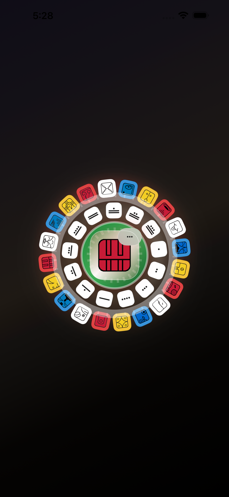
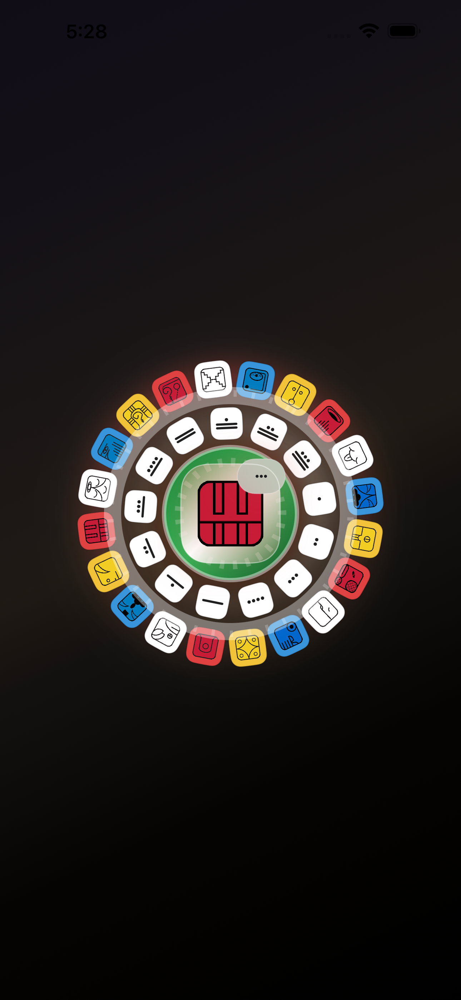
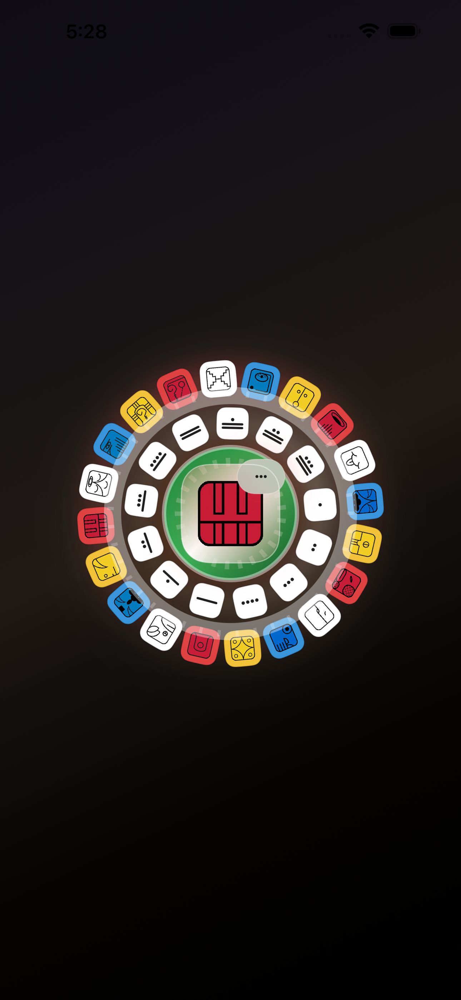
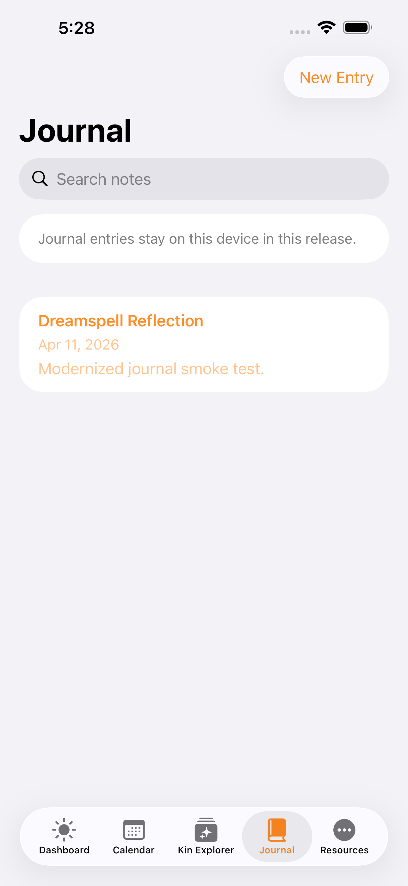
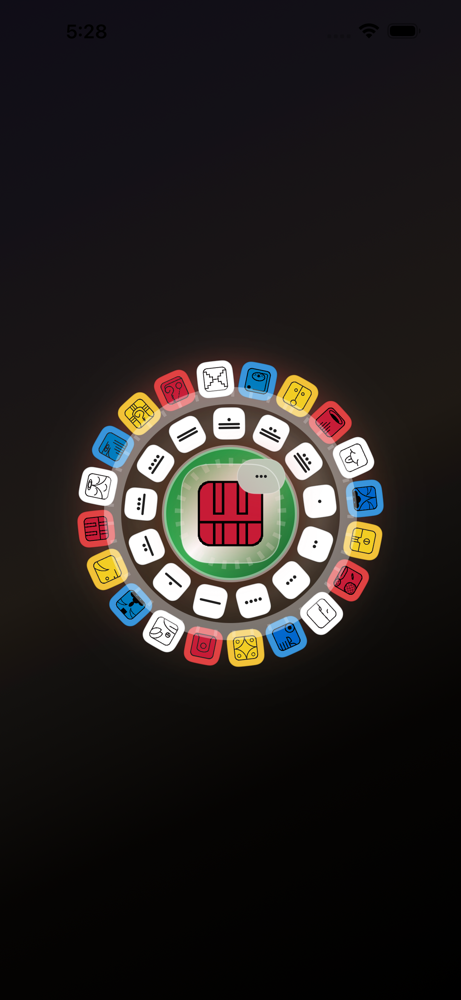
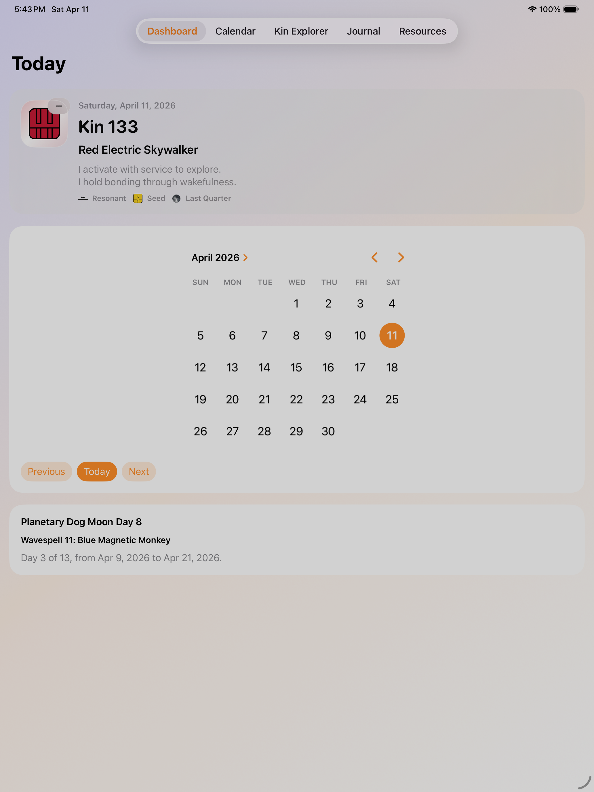

Check today’s signature quickly
The Dashboard surfaces today’s kin, Dreamspell year tone and seal, lunar phase, and a daily affirmation without needing an account or network connection.
Dreamspell for iPhone and iPad
Dreamspell helps you check today’s kin, explore the 13 Moon calendar and Tzolkin cycles, study tones and seals, and keep a private journal that stays on your device in the current release.
This landing page is designed to serve as the public App Store Marketing URL now, then stay in place after the App Store product page goes live.
The Dashboard surfaces today’s kin, Dreamspell year tone and seal, lunar phase, and a daily affirmation without needing an account or network connection.
Browse the 13 Moon cycle, inspect the Tzolkin matrix, look up dates, and follow wavespell timing across the 260-day rhythm.
Kin Explorer lets you combine galactic tones and solar seals, inspect kin relationships, and reflect on group kin blends inside the app.
The Journal feature keeps searchable notes tied to dates and kin on the device in the current release, while Resources collects privacy notes, reference links, and guided learning content.
In The App
The site uses the same checked-in Dreamspell screenshots already prepared for App Store submission so the public page stays aligned with the real app.






What’s Included
This site stays intentionally conservative about launch claims so the public promise matches the current app binary and App Store review materials.
Support & Privacy
Use the pages below for App Store Support and Privacy Policy URLs after you replace the placeholder publisher contact details with your real public support and legal information.